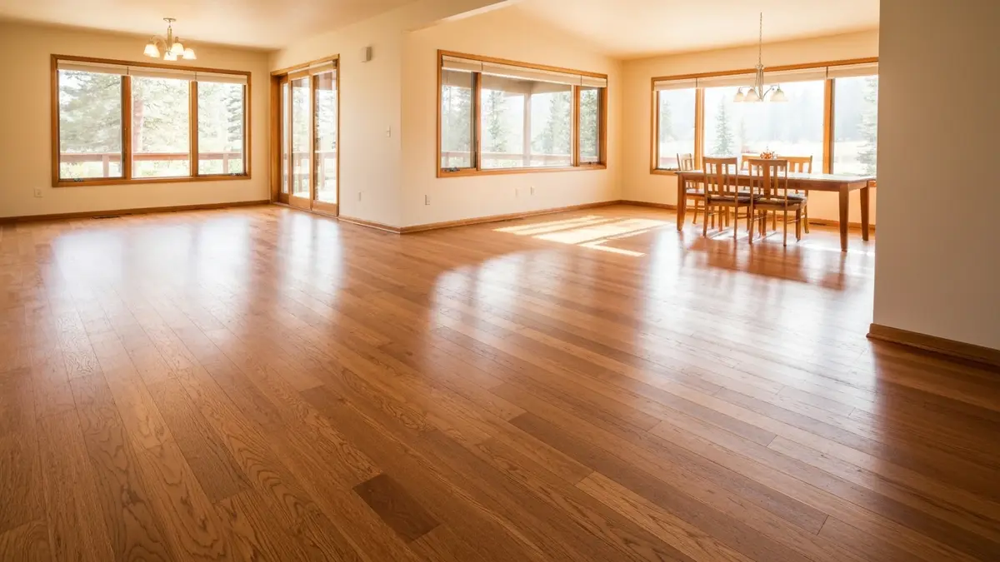

Veradale is a census-designated community within Spokane Valley, situated in the central Valley corridor near Sullivan Road and I-90. With no municipal boundary of its own, Veradale blends seamlessly with surrounding Spokane Valley neighborhoods, and its residents benefit from the Valley's services and amenities. The area features a mix of ranchers and two-story homes built primarily in the 1970s through 2000s, many of which have original hardwood that benefits from refinishing or have been carpeted over original wood that is worth uncovering. Selkirk Hardwood serves Veradale as part of our comprehensive Spokane Valley coverage.

Our Hardwood Flooring Services in Veradale
- Hardwood Installation — New solid and engineered hardwood installation in Veradale homes.
- Floor Refinishing — Dustless sanding and refinishing to restore existing hardwood floors.
- Custom Staining — Full palette of stain colors to match your Veradale home's interior.
- Floor Repair — Board replacement, gap filling, and spot repair for damaged sections.
- Moisture Testing — Essential in Washington's climate before any installation.

Frequently Asked Questions — Hardwood Floors in Veradale
How does Veradale compare to other Spokane Valley neighborhoods for hardwood work?
Veradale's housing stock is typical of the central Valley — primarily ranchers and split-levels from the 1970s and 1990s that may have original oak or fir hardwood under carpet or in need of refinishing. It is one of our most frequently served Valley communities.
What refinishing options do you offer for older Veradale hardwood floors?
For Veradale's older hardwood floors, we offer full sanding and refinishing with any stain color, dustless sanding to minimize mess, and water-based finish options that have low odor and cure quickly — ideal for occupied homes.
Do you offer free estimates in Veradale?
Yes. We provide free in-home estimates throughout Veradale and all of Spokane Valley. We assess the existing floor condition, measure square footage, and provide a detailed quote the same day.
Get a Free Estimate in Veradale
NWFA-certified · Dustless sanding · Serving Veradale and the Spokane metro
📞 (509) 461-9375